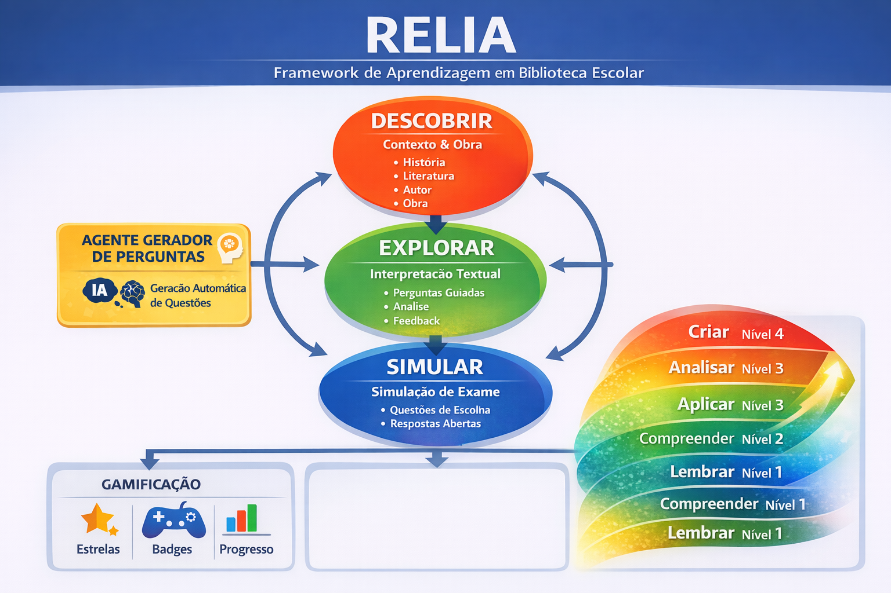

Leitura com orientação
A aplicação organiza o estudo da obra e mostra-te em que aspetos deves concentrar a atenção.
Aplicação RELIA
O objetivo deste guia é orientar o uso da aplicação RELIA e apoiar o estudo literário com autonomia, método e pensamento crítico. Cada fase corresponde a um momento de trabalho e a uma forma específica de interação com a obra.
1
O RELIA é uma aplicação de apoio à leitura literária. Ajuda-te a estudar uma obra através de perguntas orientadoras, atividades por fases e dinâmicas que desenvolvem compreensão, interpretação e preparação para contextos de avaliação.
A aplicação organiza o estudo da obra e mostra-te em que aspetos deves concentrar a atenção.
O RELIA usa inteligência artificial para gerar perguntas e apoiar a reflexão, não para substituir a tua leitura.
Começas por contextualizar, passas à interpretação e terminas com aplicação e treino de resposta.
2
3
Esta versão do guia apresenta uma aplicação-modelo com Os Lusíadas, adequada ao 12.º ano. A estrutura pode depois ser adaptada a outras obras do 11.º e 12.º anos e, numa fase seguinte, a níveis do 7.º ao 10.º ano.
O RELIA organiza o trabalho em biblioteca escolar e ajuda-te a perceber como as fases se ligam.

Professor, biblioteca, IA e leitor trabalham em conjunto. A aplicação não substitui o estudo: orienta-o.

4
Nesta fase, preparas a leitura. O objetivo não é ainda interpretar em profundidade, mas construir base histórica, literária e conceptual para compreender melhor a obra.
Compreender autor, tempo histórico, género, temas e relevância da obra antes da interpretação detalhada.
Organizar informação em quatro eixos: contexto histórico, contexto literário, autor e estrutura da obra.
Construir um quadro visual e formular perguntas que possam transformar contexto em interpretação.
Ler a missão da sessão na aplicação.
Identificar dados sobre Camões, Renascimento e expansão marítima.
Relacionar esse contexto com a natureza épica da obra.
Preparar três perguntas de exame possíveis.
Memorizar datas ou definições sem perceber como elas ajudam a interpretar a obra.
5
Nesta fase, passas da contextualização para a interpretação. A aplicação orienta-te com perguntas, excertos e tarefas que exigem análise progressiva.
Observar personagens, episódios, símbolos, linguagem, valores épicos e construção narrativa.
Responder a perguntas orientadoras e justificar cada interpretação com provas textuais.
Explicar como forma, linguagem e contexto produzem significado.
Ler o excerto com atenção ao enunciado.
Destacar palavras, imagens e ideias centrais.
Responder à pergunta e justificar com texto.
Comparar a tua leitura com feedback e reformular.
Responder de forma vaga, sem citar ou referir sinais concretos do excerto trabalhado.
6
A fase Simular aproxima-te de situações de avaliação formal. Aqui, a prioridade é aplicar o que aprendeste e construir respostas rigorosas, claras e bem justificadas.
Itens de escolha múltipla, resposta curta e resposta aberta com componente interpretativa.
É necessário selecionar provas relevantes e organizar a resposta com clareza.
Transformar leitura e análise em resposta precisa, estruturada e adequada ao contexto escolar.
Ler o item até ao fim antes de responder.
Perceber o que o verbo do enunciado pede: identificar, explicar, justificar, comparar.
Selecionar provas textuais e organizar a resposta.
Rever clareza, rigor, vocabulário literário e completude.
Escrever respostas genéricas sem ligação explícita à obra, ao excerto ou ao pedido do item.
7
8
Utiliza a aplicação para esclarecer, comparar, explorar, rever interpretações e melhorar formulações.
Não copies respostas sem verificação. A interpretação literária exige leitura, seleção de provas e formulação pessoal.
9
Esta versão foi desenhada para o 11.º e 12.º anos. A mesma estrutura poderá depois ser simplificada e progressivamente adaptada para o 7.º, 8.º, 9.º e 10.º anos, ajustando linguagem, extensão dos textos e complexidade das tarefas.